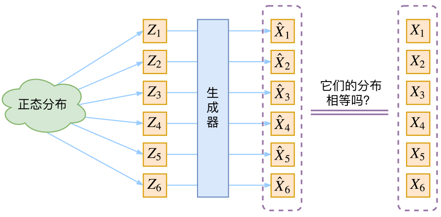
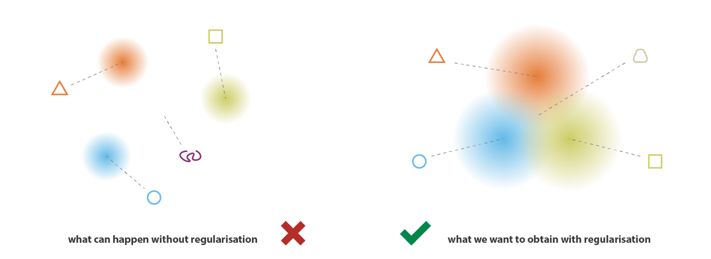
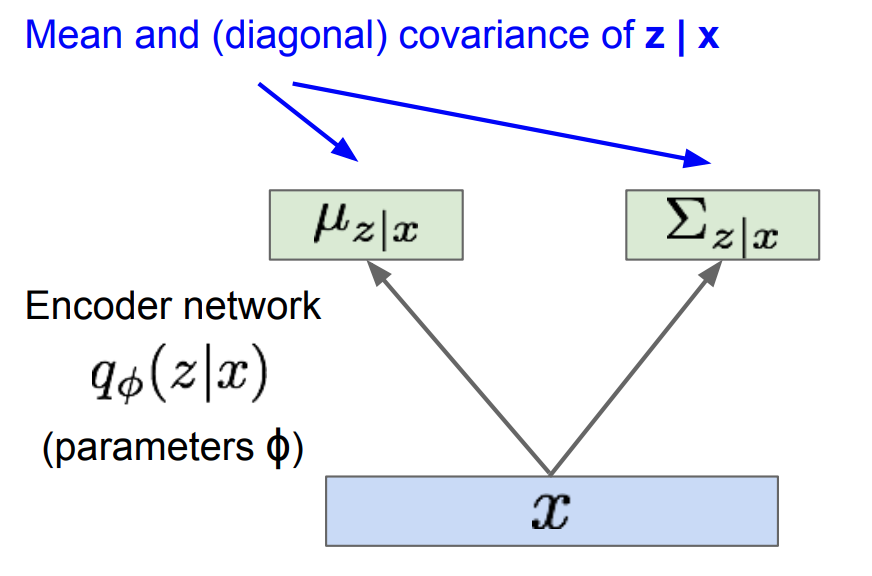
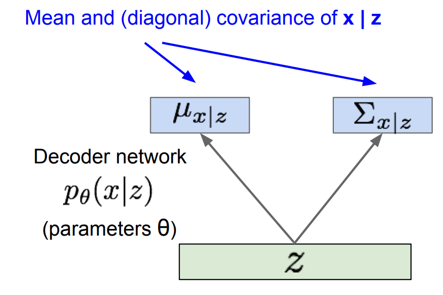
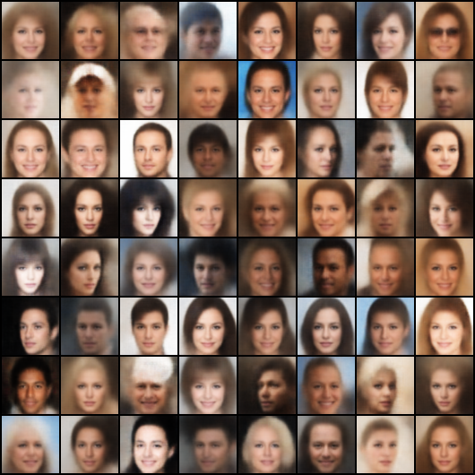

VAE梳理
\[ \newcommand{\R}{\mathbb R} \newcommand{\N}{\mathcal N} \]
虽然早在看 CS231n 时就学过 VAE 了，但当时学的可谓是不明不白、一塌糊涂，假装懂了的样子就把它放过去了。其实倒也无可厚非，毕竟那时候刚刚入门，如果硬攻的话不知要浪费多少时间。而今我痛定思痛，决定好好学它一遭，不把 VAE 搞懂就誓不……咳咳，打住，打住……
核心思想
VAE 的目标是训练一个生成器，将随机向量 \(z\in\R^d\)（一般采自正态分布）映射到 \(x\in\R^D\)，并要求 \(x\) 的分布尽可能接近真实数据的分布，如图所示：

注意，\(z\) 到 \(x\) 并不是一一映射，事实上，在 VAE 中同一个输入 \(z\) 可以映射到多个输出 \(x\)。
既然是衡量两个分布的相似度，我们能否直接用各种散度（如 KL 散度）作为损失函数呢？很遗憾不行，因为我们不知道分布的表达式，只知道从分布中采出的样本，而散度的计算需要具体的表达式。
熟悉 GANs 数学原理的朋友可能已经发现了，GANs 引入判别器，本质上是用一种隐式的方式优化了 KL 散度（或者 JS 散度、Wasserstein distance 等各种衡量分布相似度的指标）。
回到 VAE 来，一个生成网络可以表达为 \(p_\theta(x\vert z)\)——其中 \(\theta\) 是模型参数，\(z\) 是模型输入，并且模型对同一个输入有不止一个可能的输出，因此写作概率分布。那么它能够生成的数据的概率分布为： \[ p_\theta(x)=\int_zp_\theta(x\vert z)p(z)\mathrm dz \]
我们希望 VAE 生成真实样本的概率变大。考虑用极大似然法，我们采样一些真实样本 \(x\) ，并最大化它们的对数似然： \[ L(\theta)=\log p_\theta(x)=\log\left(\int_zp_\theta(x\vert z)p(z)\mathrm dz\right) \] \(\log\) 里有个积分的形式阻碍了我们继续求解，这是否让你想起了什么——没错，EM 算法！
EM 算法回顾（基于EM算法 1.6 节）：引入概率分布 \(q(z)\)，则： \[ \begin{align} L(\theta)&=\log p_\theta(x)\\ &=\int_z q(z)\log p_\theta(x)\mathrm dz\\ &=\int_z q(z)\log \left(\frac{p_\theta(x\vert z)p(z)}{p_\theta(z\vert x)}\cdot\frac{q(z)}{q(z)}\right)\mathrm dz\\ &=\int_z q(z)\left[\log\frac{p(z)}{q(z)}+\log p_\theta(x\vert z)+\log\frac{q(z)}{p_\theta(z\vert x)}\right]\mathrm dz\\ &=\underbrace{\mathbb E_{z\sim q(z)}[\log p_\theta(x\vert z)]-\mathrm {KL}(q(z)\|p(z))}_{\mathrm{ELBO}}+\underbrace{\mathrm{KL}(q(z)\|p_\theta(z\vert x))}_{\mathrm {KL}}\label{em}\tag{1} \end{align} \] 优化过程是迭代执行 E-step 和 M-step：
- E-step：固定 \(\theta\)，取 \(q(z)=p_\theta(z\vert x)\)，即使得 \(\mathrm{KL}(q(z)\Vert p_\theta(z\vert x))=0\)，也即让 ELBO 增大到与 \(L(\theta)\) 相等。
- M-step：固定 \(q(z)\) 不变，最大化 ELBO，从而达到优化 \(L(\theta)\) 的目的。
非常可惜的是，EM 算法无法直接应用于此，因为 E-step 要求我们能够表达出后验分布 \(p_\theta(z\vert x)\)，但在 VAE 中，后验分布是 intractable 的。所以我们陷入了这样的境地：我们知道 \(p_\theta(z\vert x)\) 是 \(q(z)\) 的最优解，但是表达不出来。这就好比我们知道一个方程有解，但是无法显式地把解写出来一样尴尬。怎么办呢？解析走不通，数值法来凑！就好比用数值方法来求方程的根，我们现在用数值优化的方式——比如梯度下降——让 \(q(z)\) 去逼近 \(p_\theta(z\vert x)\)，即最小化 \(\mathrm{KL}(q(z)\Vert p_\theta(z\vert x))\). 当然，为了用上梯度下降，我们需要把 \(q(z)\) 参数化为 \(q_\phi(z\vert x)\)，这样对 \(\phi\) 求梯度就好了.
为什么是 \(q_\phi(z\vert x)\) 而不是 \(q_\phi(z)\)？因为 EM 算法中找到的最优 \(q(z)\)，即 \(q^\ast(z)=p_\theta(z\vert x)\)，其实是依赖于 \(x\) 的，即不同的数据的最优 \(q(z)\) 是不一样的，只是没在记号中体现出来而已。
即便如此，计算 KL 不也得知道 \(p_\theta(z\vert x)\) 表达式才行吗？注意，现在我们一直待在 E-step 里，所以 \(L(\theta)\) 是定值，观察 \(\eqref{em}\) 式，最小化 KL 项，等价于最大化 ELBO 项！所以我们可以通过最大化 ELBO 来间接地最小化 KL[3]！（妙啊～
行文至此，原本的 EM 算法已经变成了[4]：
- E-step：固定 \(\theta\)，梯度下降优化 ELBO
- M-step：固定 \(q_\phi(z\vert x)\)，优化 ELBO
鉴于 E-step 一定用的是梯度下降，我们干脆在 M-step 也用梯度下降（而非算解析解），那就没有必要迭代了，直接两步合一步优化 ELBO 即可： \[ \max_{\theta,\phi}\quad\mathrm{ELBO}=\mathbb E_{z\sim q_\phi(z\vert x)}[\log p_\theta(x\vert z)]-\mathrm{KL}(q_\phi(z\vert x)\|p(z)) \] 取个负号就是 VAE 的损失函数： \[ \mathcal L=\mathbb E_{z\sim q_\phi(z\vert x)}[-\log p_\theta(x\vert z)]+\mathrm{KL}(q_\phi(z\vert x)\|p(z))\tag{2}\label{obj} \]
我们看到，VAE 的损失函数由两部分构成：
- \(\mathbb E_{z\sim q_\phi(z\vert x)}[-\log p_\theta(x\vert z)]\) 是重构项，最大化 \(x\) 被重构的似然；
- \(\mathrm{KL}(q_\phi(z\vert x)\Vert p(z))\) 可以视作正则项，让估计的后验分布逼近先验分布。
怎么理解呢？假设只有重构项，可以想见为了更好的重构，网络会尽可能地减小不确定性——一方面让分布 \(q_\phi(z\vert x)\) 的方差很小，基本集中在一个点上；另一方面对不同的 \(x\) 让分布 \(q_\phi(z\vert x)\) 均值差异很大，以便更好地区分不同 \(x\) 编码出来的 \(z\)[8]（如下左图所示）。如此一来，VAE 就退化成一般的 auto-encoder 了；而正则项强制让 \(q_\phi(z\vert x)\) 逼近 \(p(z)\)，一个我们预先设定的分布，就可以约束上述两点的发生（如下右图所示）。所以二者之间存在一种“对抗”的感觉[1][2]。如此训练，VAE 被迫在具有一定随机性的噪声下重构出真实数据，自然就比 auto-encoder 有更好的泛化性。

具体化
我们现在得到了 VAE 的损失函数 \(\eqref{obj}\)，但其中的 \(p(z)\)、\(p_\theta(x\vert z)\)、\(q_\phi(z\vert x)\) 具体是什么并没有说明。要真正落地，还需要把它们“实例化”。
Encoder network
首先考虑损失函数中 \(\mathrm{KL}(q_\phi(z\vert x)\Vert p(z))\) 一项。由于正态分布的 KL 散度相对来说好算一些，我们希望 \(p(z)\) 和 \(q_\phi(z\vert x)\) 都是正态分布：
- \(p(z)\)：简便起见，直接取为 \(\N(0, I)\) 标准正态分布；
- \(q_\phi(z\vert x)\)：考虑到它依赖于 \(x\)，所以应该是 \(\N(\mu_\phi(x),\Sigma_\phi(x))\) 的形式。可是 \(\mu_\phi(x),\Sigma_\phi(x)\) 用怎样的函数才好呢？在深度学习的时代，这种开放性问题就无脑上神经网络呗！这就是 VAE 中的 encoder network。
于是[7]： \[ \begin{align} &\mathrm{KL}(q_\phi(z\vert x)\|p(z))\\ =&\mathrm{KL}(\N(\mu_\phi(x),\Sigma_\phi(x))\|\N(0,I))\\ =&\frac{1}{2}\left[\mathrm{tr}(\Sigma_\phi(x))+\mu_\phi(x)^T\mu_\phi(x)-d-\log\det(\Sigma_\phi(x)) \right] \end{align} \] 实操时，我们一般会做简化——取 \(\Sigma_\phi(x)=\mathrm{diag}(\sigma_\phi^2(x))\)，即各分量独立，协方差矩阵只有对角线有值，那么： \[ \begin{align} &\mathrm{KL}(q_\phi(z\vert x)\|p(z))\\ =&\mathrm{KL}(\N(\mu_\phi(x),\mathrm{diag}(\sigma_\phi^2(x)))\| \N(0,I))\\ =&\frac{1}{2}\sum_{i=1}^d\left(\mu_\phi^2(x)_i+\sigma_\phi^2(x)_i-\log \sigma_\phi^2(x)_i-1\right) \end{align} \] 另外，为了避免正负的麻烦，我们可以视 encoder 的输出为 \(\log \sigma_\phi^2(x)\) 而非 \(\sigma_\phi^2(x)\)，这样就不需要在最后加一个激活函数了。

Decoder network
接下来考虑损失函数中 \(\mathbb E_{z\sim q_\phi(z\vert x)}[-\log p_\theta(x\vert z)]\) 一项，也就是生成模型 \(p_\theta(x\vert z)\) 的形式，一般有两种选择[2]：
伯努利分布：输出只有 0/1，所以只适用于生成二值数据（比如黑白图像）。设伯努利分布的参数为 \(\rho_\theta(z)\in\mathbb [0,1]^D\)，那么： \[ p_\theta(x_i\vert z)=\begin{cases}\rho_\theta(z)_i,&x_i=1\\1-\rho_\theta(z)_i,&x_i=0\end{cases} \] 于是 \[ -\log p_\theta(x\vert z)=-\sum_{i=1}^D\log p_\theta(x_i\vert z)=\sum_{i=1}^D\left[-x_i\log \rho_\theta(z)_i-(1-x_i)\log(1-\rho_\theta(z)_i)\right] \] 即 BCELoss.
正态分布：设参数为 \(\mu_\theta(z)\in\mathbb R^D,\Sigma_\theta(z)\in\mathbb R^{D\times D}\)，那么： \[ p_\theta(x\vert z)=\frac{1}{(2\pi)^{D/2}(\det\Sigma_\theta(z))^{1/2}}\exp\left(-\frac{1}{2}(x-\mu_\theta(z))^T\Sigma_\theta^{-1}(z)(x-\mu_\theta(z))\right) \] 于是 \[ -\log p_\theta(x\vert z)=\frac{D}{2}\log(2\pi)+\frac{1}{2}\log\det\Sigma_\theta(z)+\frac{1}{2}(x-\mu_\theta(z))^T\Sigma_\theta^{-1}(z)(x-\mu_\theta(z)) \] 实操时，我们一般会取 \(\Sigma_\theta(z)=\sigma^2I\)，即各分量独立且方差固定为某常数。那么： \[ -\log p_\theta(x\vert z)=\frac{D}{2}\log(2\pi)+\frac{D}{2}\log\sigma^2+\frac{1}{2\sigma^2}\|x-\mu_\theta(z)\|^2 \] 前两项是定值，与优化无关，所以优化目标就是 \[ \frac{1}{2\sigma^2}\|x-\mu_\theta(z)\|^2 \] 即 MSELoss.
注意：上式中 \(\Vert\bullet\Vert^2\) 是欧氏距离，如果直接用
nn.MSELoss会对 CHW 维也取平均（假设在图像上训练），结果是实际欧氏距离的 \(1/CHW\)，导致重构项和 KL 项权重失衡。所以实现时要么只对 mini-batch 取平均、CHW 维求和，要么全取平均，但是 KL 项加个系数缩小。
与 encoder network 同理，\(\rho_\theta(z)\) 或者 \(\mu_\theta(z)\) 直接由一个 decoder network 得到。

至此我们算出了 \(-\log p_\theta(x\vert z)\)，但是损失函数 \(\eqref{obj}\) 里还要对它取期望，所以理论上，我们应该对每一条数据都采大量 \(z\) 算平均。但实践中人们发现只采一个就能 work，毕竟我们会训练多个 epochs.
Loss 权重
考虑实践中最常用的设置：
- \(p(z)\) 取 \(\N(0,I)\)；
- \(q_\phi(z\vert x)\) 取 \(\N(\mu_\phi(x),\Sigma_\phi(x))\)，且 \(\Sigma_\phi(x)=\mathrm{diag}(\sigma_\phi^2(x))\)；
- \(p_\theta(x\vert z)\) 取 \(\N(\mu_\theta(z),\Sigma_\theta(z))\)，且 \(\Sigma_\theta(z)=\sigma^2I\)，其中 \(\sigma^2\) 是事先取定的一个超参数。
那么根据前两小节的推导，损失函数是： \[ \mathcal L=\underbrace{\frac{1}{2\sigma^2}\|x-\mu_\theta(z)\|^2}_\text{Reconstruction}+\underbrace{\frac{1}{2}\sum_{i=1}^d\left(\mu_\phi^2(x)_i+\sigma_\phi^2(x)_i-\log \sigma_\phi^2(x)_i-1\right)}_\text{KL Regularization},\quad z\sim\mathcal N(\mu_\phi(x),\text{diag}(\sigma_\phi^2(x))) \] 可以看到，重构项和 KL 正则项由超参数 \(\sigma^2\) 加权。\(\sigma^2\) 越小，重构项权重越大，意味着结果更真实，但泛化性下降。一般直接取 \(\sigma^2=1\) 即可。
重参数化技巧
重参数化技巧在之前的文章中已经介绍过了，并且正是用 VAE 举的例子，所以这里不再赘述。简单说来，就是现在 \(z\) 是从 \(q_\phi(z\vert x)\sim\N(\mu_\phi(x),\mathrm{diag}(\sigma_\phi^2(x)))\) 中采样的，但梯度无法经过采样传播到参数 \(\phi\)。解决方法很简单，先从 \(\N(0,I)\) 中采样 \(z'\)，再计算 \(z=\mu_\phi(x)+z'\ast\sigma_\phi(x)\) 就好了。
代码实现
Github repo: https://github.com/xyfJASON/VAEs-Implementations
放个结果：

参考资料
- 苏剑林. (Mar. 18, 2018). 《变分自编码器（一）：原来是这么一回事 》[Blog post]. Retrieved from https://spaces.ac.cn/archives/5253 ↩︎
- 苏剑林. (Mar. 28, 2018). 《变分自编码器（二）：从贝叶斯观点出发 》[Blog post]. Retrieved from https://spaces.ac.cn/archives/5343 ↩︎
- 原来VAE是这么回事（从EM到VAE） - 市井小民的文章 - 知乎 https://zhuanlan.zhihu.com/p/368959795 ↩︎
- EM的升级打怪之路：EM-变分EM-VAE（part1） - Young Zicon的文章 - 知乎 https://zhuanlan.zhihu.com/p/418203971 ↩︎
- VAE 的前世今生：从最大似然估计到 EM 再到 VAE - AI科技评论的文章 - 知乎 https://zhuanlan.zhihu.com/p/443540253 ↩︎
- Weng, Lilian. From Autoencoder to Beta-VAE. https://lilianweng.github.io/posts/2018-08-12-vae/ ↩︎
- Doersch, Carl. Tutorial on variational autoencoders. arXiv preprint arXiv:1606.05908 (2016). ↩︎
- 半小时理解变分自编码器 - 多头注意力的文章 - 知乎 https://zhuanlan.zhihu.com/p/144649293 ↩︎